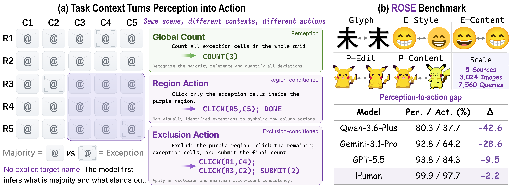
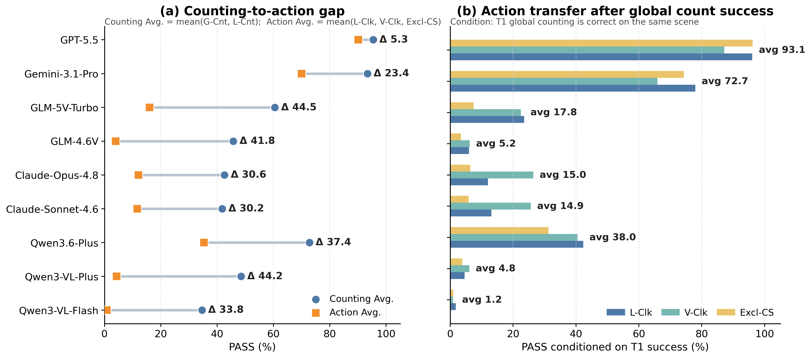

1,512
Scenes
Reference-conditioned Oddity and Symbolic Execution
The dataset and paper links may remain private or provisional during release preparation.

Multimodal models can often recognize or count visual exceptions, yet fail when the same evidence must be filtered, rebound, and executed under region-specific action constraints.
Multiple counting and action tasks share the same underlying visual evidence.
Predictions are automatically verified as counts, coordinate sets, or click-count submissions.
Global-click and matched local-count bridges separate perception, coordinate grounding, and context rebinding.
Multimodal large language models are increasingly expected to move beyond visual understanding and act on visual information. However, existing evaluations make it difficult to determine whether an action failure arises from incorrect perception, inaccurate coordinate grounding, or an inability to adapt a correct scene interpretation to the current task context. ROSE provides a controlled test of this transition by coupling counting and coordinate-action tasks over the same fine-grained visual scenes. Across nine recent multimodal models, performance drops by as much as 44.5 percentage points from counting-oriented tasks to region-conditioned action. The gap persists even when evaluation is restricted to scenes or regions that the same model has already counted correctly. Further controls show that coordinate grounding explains only part of the loss; a central bottleneck lies in preserving and rebinding visual evidence as task context changes.
The target identity is never named in text. Each model must infer the majority visual reference, locate the exception cells, apply the current region condition, and produce the required formal answer.
Fine-grained glyph distinctions among visually confusable Chinese characters.
Style-level variation while preserving the same emoji identity.
Visually related emoji identities selected with category and similarity controls.
Manually verified local edits within the same pixel-art image.
Visually related but semantically different pixel-art contents.
| Template | Task | Context | Output |
|---|---|---|---|
T1 |
Global counting | Whole grid | COUNT(n) |
T2 |
Local counting | Numeric region | COUNT(n) |
T3 |
Local clicking | Numeric region | CLICK(...); DONE |
T4 |
Visual-region clicking | Highlighted region | CLICK(...); DONE |
T5 |
Exclusion action | Outside an excluded region | CLICK(...); SUBMIT(n) |
COUNT(n)
CLICK(Rr,Cc); ...; DONE
CLICK(Rr,Cc); ...; SUBMIT(n)
ROSE is highly solvable by humans, but current models show a clear and model-dependent gap between counting-oriented perception and exact region-conditioned action.
GPT-5.5 achieves the strongest model result at 92.2% PASS, followed by Gemini-3.1-Pro at 79.4%. The remaining evaluated models range from 14.3% to 50.3%.
High grammar validity does not guarantee success: Qwen3.6-Plus reaches 99.9% VALID but only 50.3% PASS, showing that many failures arise after a formally valid action has already been produced.
| Model | PASS | SOFT | VALID |
|---|---|---|---|
| Qwen3.6-Plus | 50.3 | 67.7 | 99.9 |
| GLM-5V-Turbo | 33.8 | 54.5 | 99.5 |
| Gemini-3.1-Pro | 79.4 | 82.0 | 93.4 |
| GPT-5.5 | 92.2 | 94.6 | 100.0 |
| Human | 98.8 | 99.7 | — |

The bridge inserts global coordinate localization between global counting and region-conditioned clicking:
| Model | G-Cnt | G-Clk | V-Clk |
|---|---|---|---|
| Qwen3.6-Plus | 80.3 | 67.1 | 37.7 |
| Gemini-3.1-Pro | 92.8 | 86.5 | 64.2 |
| GPT-5.5 | 93.8 | 91.8 | 84.3 |
Coordinate grounding explains part of the loss, but the larger drop often appears only after region context is introduced.
Each matched pair uses the same image, numeric region, and target set; only the required output changes.
| Model | mL-Cnt | L-Clk | mL-Cnt ✓ | Fail |
|---|---|---|---|
| Qwen3.6-Plus | 63.2 | 52.7 | 47.3 |
| GPT-5.5 | 71.6 | 95.5 | 4.5 |
Correct cardinality is not uniformly stable under action: the transfer failure remains severe for Qwen3.6-Plus but is largely closed by GPT-5.5.
The model may solve global counting correctly while failing to rebind the same interpretation to the current action context.

@article{rose2026,
title = {ROSE: Benchmarking the Perception-to-Action Gap in Multimodal Models},
author = {Anonymous Authors},
journal = {arXiv preprint arXiv:XXXX.XXXXX},
year = {2026}
}